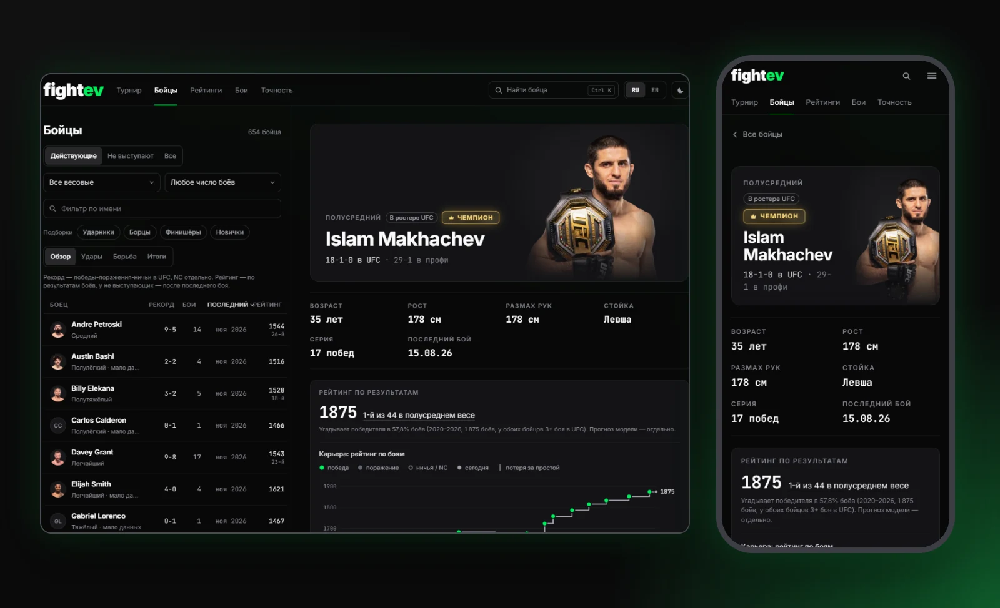
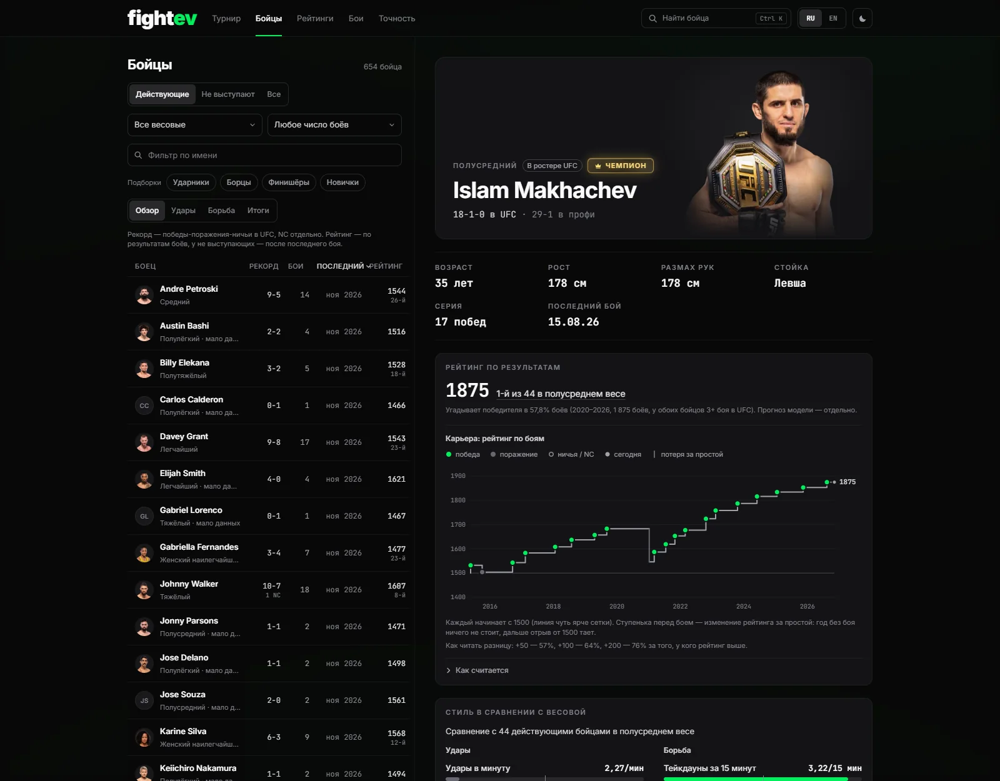
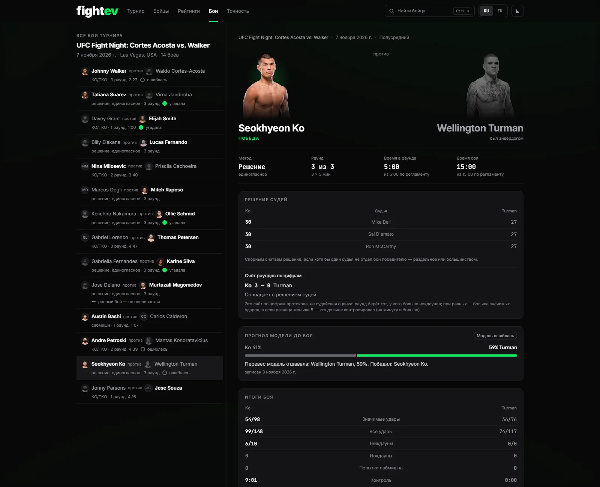
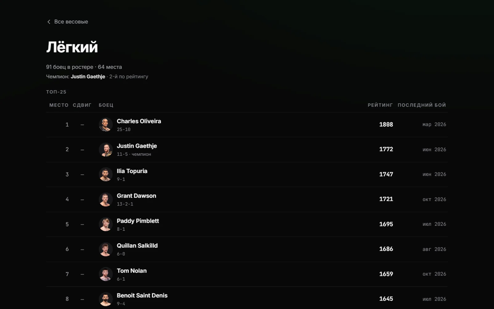
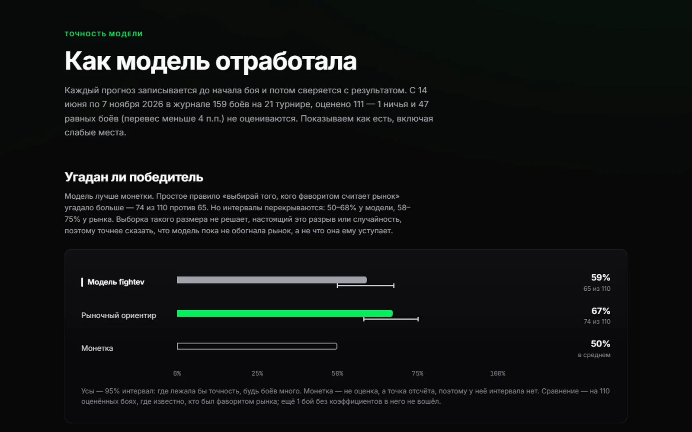

Кейс · fightevCase study · fightev
Приложение со статистикой UFC, которое честно показывает свои ошибкиA UFC stats app that honestly shows its own misses
Продуктовый дизайн и фронтенд: исследование, дизайн-система и React-приложение с данными по 2 752 бойцам — в проде.Product design and front end: research, a design system and a React app with data on 2,752 fighters — in production.

Сильные стороныWhat this case shows
01Решения по людямDecisions from people
Тест макетов на 6 людях, опрос сообщества на 300+ (ответила треть), разбор конкурентов. По ним главное событие вынесено вперёд, лишние метрики убраны.A mockup test with 6 people, a community survey of 300+ (a third replied), a competitor review. The main event moved up front and extra metrics were dropped.
Доверие к цифрамTrust in the numbers
Люди принимали вероятность за факт. Вместо процента — слово («Равный бой», «Перевес»), пороги сверены с калибровкой, промахи модели помечены и не убираются.People took the probability for a fact. A word replaces the percentage (“Even fight”, “Edge”), cut-offs are checked against calibration, and the model’s misses are tagged, never hidden.
Сложное — простоComplex, made simple
Рейтинг бойца, график карьеры, стиль как место среди бойцов весовой («наносит больше, чем 93%») — вместо сырых цифр, которые ничего не говорят.A fighter rating, a career chart, style as a rank among the division (“lands more than 93%”) instead of raw numbers that say nothing.
Система и состоянияA system and its states
18 компонентов, 30 экранов, две темы, RU / EN. Загрузка, ошибка, нет данных, мало данных, ничья — нарисованы заранее.18 components, 30 screens, two themes, RU / EN. Loading, error, no data, thin data, a draw — drawn up front.
Доступность замеренаAccessibility measured
Контраст полос не ниже 3:1 в обеих темах и под симуляцией дальтонизма, ни одной горизонтальной прокрутки на 360–1440 px.Bar contrast of at least 3:1 in both themes and under colour-blindness simulation, no sideways scroll from 360 to 1440 px.
До кодаTo code
Верстаю на React по своим макетам. Разработке не нужно угадывать.I build the front end in React from my own mockups. Nothing left for a developer to guess.
Задача и итогProblem and result
02- ЗадачаProblemСайт был витриной платной подписки: график прибыли, тарифы и ни слова о самих боях. Когда подписку отменили, нужна была другая работа: за секунды показать расклад турнира и не дать переоценить прогноз.The site was a storefront for a paid subscription: a profit chart, pricing and nothing about the fights. When the subscription went away, the job changed: show the card in seconds without letting anyone overrate the forecast.
- РешениеSolutionИз страницы карда вырос продукт из пяти разделов: Турнир, Бойцы, Рейтинги, Бои, Точность. Модель, рынок и монетка стоят на одной шкале, у каждой 95%-й интервал.The card page grew into a product of five sections: Card, Fighters, Rankings, Fights, Accuracy. The model, the market and a coin flip share one scale, each with a 95% interval.
- ИтогResultРаботающее приложение: 2 752 профиля, 8 835 боёв, 796 турниров. Собственный рейтинг бойцов проверен один раз на 1 875 боях 2020–2026: угадывает победителя в 57,8% [55,6–60,0].A working app: 2,752 profiles, 8,835 fights, 796 events. The fighter rating was checked once on 1,875 fights from 2020–2026: it calls the winner in 57.8% [55.6–60.0].
- Чего нетNot yetГлубинных интервью и данных о повторных визитах. Модель пока не обогнала рыночный ориентир — приложение говорит об этом прямо.In-depth interviews and data on return visits. The model has not beaten the market benchmark yet — and the app says so plainly.
ПриложениеThe app
03



На телефоне те же разделы; список бойцов и профиль идут отдельными экранами.On a phone, the same sections; the fighter list and the profile are separate screens.
Ключевые решенияKey decisions
04- Слово вместо процентаA word, not a percentage51% читается как «победит», хотя это монетка. До 54% — «Равный бой», дальше «Небольшой перевес» и «Перевес». Слову сильнее нечем опереться: самые уверенные прогнозы сбываются хуже всего. Новичкам — метка «мало данных» прямо в строке.51% reads as “wins”, when it is a coin flip. Up to 54% it is “Even fight”, then “Slight edge” and “Edge”. Nothing backs a stronger word: the most confident calls come true least often. Newcomers get a “limited data” tag on the row.
- Рейтинг — не прогнозA rating is not a forecastУ каждого числа своя подпись, поэтому они не спорят. Сводные индексы 0–100 («кардио», «подбородок») не публикуются: «кардио» оказалось монеткой, 49,7%.Each number has its own caption, so they never contradict each other. Composite 0–100 scores (“cardio”, “chin”) are not published: “cardio” turned out to be a coin flip, 49.7%.
- Место среди своихRank among peers2,27 удара в минуту — много или мало? Стиль показан как место среди действующих бойцов весовой; зелёным подсвечена верхняя четверть.2.27 strikes a minute: a lot or a little? Style is shown as a rank among the active fighters of the division; the top quarter is green.
- Зелёный — это преимуществоGreen means the edgeЦвет не привязан к стороне боя. Одной яркости не хватило: полосы разводит зазор, каждая держит не меньше 3:1 к фону — замерено в обеих темах.Colour is not tied to a corner. Brightness alone was not enough: a gap separates the bars, and each holds at least 3:1 against its surface, measured in both themes.
- Без ставокNo bettingКоэффициенты были на прежнем сайте: они тянут ответственность за чужие деньги и возвращают аналитику в витрину. Оценка рынка осталась точкой отсчёта на странице точности.The old site carried odds: they bring responsibility for other people’s money and turn analysis back into a storefront. The market view stays a reference point on the accuracy page.